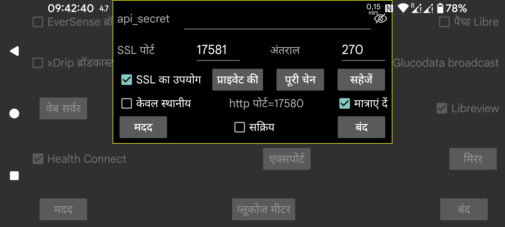

ar be de es fr hi it ja nl pl ru sv tr uk uz zh en
Juggluco में एक वेब सर्वर शामिल है जिसके माध्यम से अन्य ऐप्स Juggluco से ग्लूकोज मान प्राप्त कर सकते हैं। इसका उपयोग xDrip घड़ियाँ और कुछ Nightscout ऐप्स कर सकते हैं।
xDrip वेब सर्वर का उपयोग करने के लिए बनाए गए ऐप्स का उपयोग करना अपेक्षाकृत आसान है। बस सक्रिय चेक करें। इसके बाद वे 127.0.0.1 के पोर्ट 17580 पर ग्लूकोज प्राप्त कर सकते हैं। Nightscout सर्वर URL: http://127.0.0.1:17580
साथ ही, कुछ Nightscout फॉलोअर इसका उपयोग कर सकते हैं। जब "केवल स्थानीय" सेट नहीं है तो xDrip, Diabox, एक Windows Floating Glucose ऐप और एक Windows, Linux और macOS विजेट (Owlet) को http के साथ उपयोग किया जा सकता है। MacOS पर Nightscout Menu Bar, Gluco Status और Gluco Tracker (सभी Apple Store में) के लिए भी यही सच है। आपको Nightscouter और LoopFollow (IOS) और Nightguard (IOS और WatchOS) के लिए भी केवल http की आवश्यकता है।
यदि आप इंटरनेट पर Juggluco तक पहुंचना चाहते हैं, तो आपको अपने मॉडेम से एक पोर्ट फॉरवर्ड करना होगा। देखें:
https://www.makeuseof.com/tag/what-is-port-forwarding-and-how-can-it-help-me
बायां मध्य मेन्यू->मिरर->कनेक्शन जोड़ें->मदद
अन्य Nightscout फॉलोअर केवल https का उपयोग करते हैं और इसके लिए आवश्यक है कि Juggluco के पास Juggluco तक पहुंचने के लिए उपयोग किए जाने वाले डोमेन नाम के लिए एक प्रमाणित SSL की हो। यदि आपके बाहरी IP के साथ एक होस्टनाम जुड़ा है, तो आप Certbot के माध्यम से मुफ्त में एक सर्टिफिकेट प्राप्त कर सकते हैं। यदि आपके बाहरी IP के पास होस्टनाम नहीं है तो आप इसका उपयोग नहीं कर सकते। आप https://www.freenom.com से एक मुफ्त डोमेन नाम प्राप्त कर सकते हैं। मैंने इसे आज़माया, लेकिन कुछ हफ्तों के भीतर बिना किसी सूचना के उन्होंने मेरा डोमेन छीन लिया और जब मैंने इसे फिर से रजिस्टर करने का प्रयास किया तो इसकी कीमत थी। आप सालाना कुछ यूरो में एक होस्टनाम खरीद सकते हैं (उदाहरण के लिए https://www.strato.nl/domeinnaam से)।
Certbot इंस्टॉल करने और अपने मॉडेम से पोर्ट 80 (http) को अपने कंप्यूटर पर फॉरवर्ड करने के बाद, आप बस यह दबा सकते हैं:
certbot certonly --standalone --preferred-challenges http -d myhostname
https://devpress.csdn.net/linux/62e7999e907d7d59d1c8cfd0.html देखें।
Certbot का उपयोग करने के बाद मुझे Private key /etc/letsencrypt/live/myhostname/privkey.pem में और full chain /etc/letsencrypt/live/myhostname/fullchain.pem में मिला। "myhostname" वह होस्टनाम है जिसका मैंने उपयोग किया।
यदि आपने किसी SSL प्राधिकरण से की फ़ाइलें प्राप्त की हैं, तो आपको उन्हें Juggluco को देना होगा। "Private Key" दबाकर private key को पढ़ा जा सकता है, "Full Chain" दबाकर Full Chain को।
यदि आप केवल एक Android से दूसरे पर ग्लूकोज मान भेजना चाहते हैं, तो आप Juggluco के mirror फंक्शन (बायां मध्य मेन्यू->मिरर) का बेहतर उपयोग कर सकते हैं।
आपको Android ऐप्स AAPS, Diabetes:M, Nightwatch और Checkmate, Sugarmate (MacOS और IOS) और Xdrip4ios, Shuggah और Cockpit (IOS) के लिए SSL की आवश्यकता है। Nightscout सर्वर URL के रूप में निर्दिष्ट करें:
https://hostname:port
hostname प्रमाणित की का होस्ट नाम है जो आपने Juggluco को दिया है, port वह पोर्ट है जिसे आपने इस स्क्रीन में निर्दिष्ट पोर्ट पर फॉरवर्ड किया है (डिफ़ॉल्ट: 17581)।
AAPS का उपयोग Juggluco 7.3.0 और उच्चतर के साथ किया जा सकता है। इसके लिए आपको AAPS में निम्नलिखित सेटिंग्स के साथ NSClientV3 चुनना होगा:
NS access token के रूप में यहाँ निर्दिष्ट api-secret का उपयोग करें;
“Connect to websockets” को अनसेट करें;
“Synchronization” के तहत, सभी अपलोड बंद करें। केवल इन्हें चालू करें:
Receive/backfill CGM data;
Receive Insulin;
Receive carbs;
Receive therapy events;
सभी “advanced settings” बंद करें।
पहले दर्ज की गई मात्राओं से पहले मात्राएं डालने से AAPS में डुप्लिकेट उपचार होंगे। यह तब भी होता है जब v3 इंटरफ़ेस का उपयोग एक Nightscout सर्वर के साथ किया जाता है जो Juggluco से v3 अपलोड प्राप्त करता है।
कभी-कभी AAPS को फोर्स स्टॉप करके पुनः आरंभ करने के बाद ही AAPS सर्वर से उपचारों के लिए पूछना शुरू करता है।
वेब सर्वर को Linux कंप्यूटर पर भी चलाया जा सकता है। यह सेंसर से जुड़े Juggluco से मिरर कनेक्शन से अपना डेटा प्राप्त करेगा: https://www.juggluco.nl/Juggluco/cmdline.
एक अन्य फोन इस सर्वर से मिरर कनेक्शन के माध्यम से या Nightscout फॉलोअर के रूप में (उदाहरण के लिए Iphone पर) कनेक्ट कर सकता है। यदि कोई Nightscout ऐप है जो इस वेब सर्वर के साथ काम नहीं करता, तो कृपया मुझे बताएं। शायद इसे कुछ बदलावों के साथ काम करने लायक बनाया जा सके। (IOS ऐप्स Nightscout और Nightscout X एक विशेष Nightscout सर्वर प्रोग्राम के लिए विशिष्ट हैं और Juggluco के साथ काम नहीं करेंगे।)
api_secret: निर्दिष्ट करें कि फॉलोअर को api_secret http header element को इस मान पर सेट करना चाहिए। यह secret तब भी काम करता है जब फॉलोअर इस secret को Nightscout token के रूप में उपयोग करते हैं या SHA1 कोडेड secret के साथ api-secret header का उपयोग करते हैं। Juggluco 7.1.15 से यह भी संभव है कि api_secret को Nightscout सर्वर URL के पथ का पहला तत्व बनाया जाए। यदि xyz api_secret है और http://hostname:port Nightscout सर्वर URL है, तो आप Nightscout सर्वर URL के रूप में http://hostname:port/xzy निर्दिष्ट कर सकते हैं।
दृश्यमान: Secret को दृश्यमान बनाएं।
पोर्ट: https सर्वर से संपर्क करने के लिए उपयोग किया जाने वाला नेटवर्क पोर्ट निर्दिष्ट करें। डिफ़ॉल्ट 17581 है।
सहेजें: Secret या पोर्ट के परिवर्तन सहेजें।
SSL का उपयोग: SSL (https) का उपयोग करें। SSL के लिए आपको इस सेवा से संपर्क करने के लिए उपयोग किए जाने वाले होस्ट नाम के लिए Private key और Full chain देने की आवश्यकता है।
Private Key: private key वाली फ़ाइल चुनें। ऊपर देखें।
Full Chain: Full Chain वाली फ़ाइल चुनें, ऊपर देखें।
अंतराल: ग्लूकोज मानों के बीच डिफ़ॉल्ट न्यूनतम अंतराल (सेकंड में)। सामान्यतः यह 270 सेकंड है। एक अनुरोध interval= विकल्प की आपूर्ति करके भी इस मान को बदल सकता है। देखें https://www.juggluco.nl/Juggluco/webserver.html
केवल स्थानीय: http सर्वर केवल localhost (127.0.0.1) से एक्सेस किया जा सकता है। यह https पर लागू नहीं होता।
मात्राएं दें: http://127.0.0.1:17580/api/v1/treatments?count=3 का उपयोग करके दर्ज की गई मात्राओं को प्राप्त करना संभव बनाएं। (आपको प्रत्येक लेबल के लिए निर्दिष्ट करना होगा कि इसके साथ क्या किया जाए। पहले यह Libreview के लिए भी वही था, संस्करण 4.18.0 के बाद आप Libreview और इस वेबसर्वर के लिए लेबल को अलग-अलग श्रेणियों में रख सकते हैं।) इस इंटरफ़ेस के माध्यम से xDrip Juggluco से मात्राएं प्राप्त कर सकता है। xDrip में आप इसे दो तरीकों से कर सकते हैं:
"Hardware Data Source", "Nightscout Follower" लें और "Follow URL" के रूप में दें, http://127.0.0.1:17580 और “Download Treatments” चेक करें।
एक अन्य Hardware Data Source लें उदाहरण के लिए Libre (patched app) और Settings->Cloud Upload->Nightscout Sync (REST-API) चालू करें। Base API URL के रूप में दर्ज करें, http://somekey@127.0.0.1:17580/api/v1/ और "Download treatments" चालू करें। Juggluco पर अपलोड करना असंभव है, इसलिए यह केवल उपचार डाउनलोड करता है और कुछ त्रुटि संदेश उत्पन्न करता है।
जब "केवल स्थानीय" अनचेक किया जाता है, तो आप उस फोन के होम नेटवर्क IP का भी उपयोग कर सकते हैं जिस पर Juggluco चल रहा है, और जब आप अपने मॉडेम को उस फोन के 17580 पर फॉरवर्ड करने के लिए कॉन्फ़िगर करते हैं, तो आपके फोन का बाहरी IP। यदि आपने Juggluco को एक होस्टनाम के लिए Private Key और Full Chain दी है जिससे फोन एक्सेस किया जा सके और SSL का उपयोग चालू किया है, तो आप http के बजाय https का उपयोग करते हुए उस होस्टनाम और यहाँ निर्दिष्ट पोर्ट का भी उपयोग कर सकते हैं।
जब आप Diabetes:M पर उपचार अपलोड करना चाहते हैं, तो आप या तो Juggluco का डेटा Libreview पर भेज सकते हैं और डेटा को Libreview में "Download Glucose data" के साथ सहेज सकते हैं और इस डेटा को Diabetes:M में Data->Import from other sources->Freestyle के साथ आयात कर सकते हैं या अपने फोन के बाहरी होस्टनाम के लिए एक प्रमाणित की प्राप्त कर सकते हैं और Link external source के रूप में दे सकते हैं, URL के साथ Nightscout, https://yourhostname:Port, जहाँ yourhostname आपके Juggluco चलाने वाले फोन का होस्टनाम है जिसके लिए आपने एक प्रमाणित की प्राप्त की है और Port वह पोर्ट है जिसका आपने यहाँ उल्लेख किया है। यह स्वचालित रूप से सिंक नहीं करता है, इसलिए Diabetes:M में आपको स्वयं Sync दबाना होगा।
सक्रिय: वेब सर्वर चल रहा है।
Juggluco में लागू Nightscout/xDrip वेबसर्वर कमांडों के बारे में अधिक जानकारी के लिए, देखें https://www.juggluco.nl/Juggluco/webserver.html